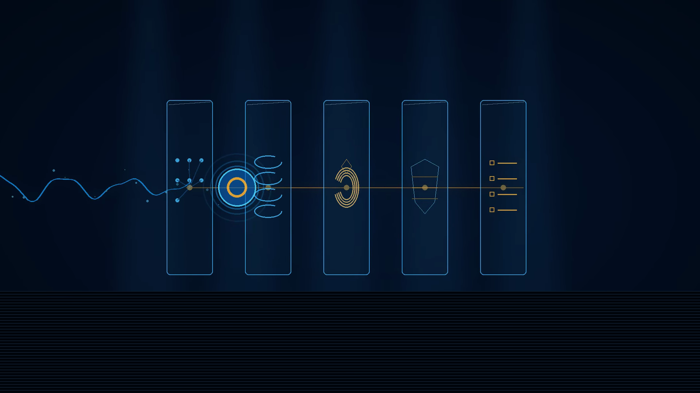

Capability is not authority.
Sentinel demonstrates how an enterprise workflow can gain agentic capability without surrendering decision authority. Consequential actions pass through explicit identity, tool, risk, confidence, approval, and evidence controls before execution.

17 human steps become a governed human-agent workflow.
The example below is fictional. It demonstrates the design pattern: automate low-risk work, retain human authority at material decision points, and require approval before consequential state change.
Baseline
17 human touches. Sequential processing. Partial decision evidence.
Governed redesign
Agents perform bounded work. Humans retain consequential decision and execution authority.
Governance should prove whether the redesign helped.
These are synthetic design targets, not production or client claims. They demonstrate the measurement contract Sentinel expects before an AI workflow is declared successful.
Inspect the authorization boundary.
Use the scenarios to see the distinction between capability and authority. The same agent can be technically capable of an action while governance returns a different disposition.
The decision leaves a reconstructable trail.
The reference engine records workflow, step, agent, action, tool, risk tier, action fingerprint, disposition, permit status, and the ordered control trace.